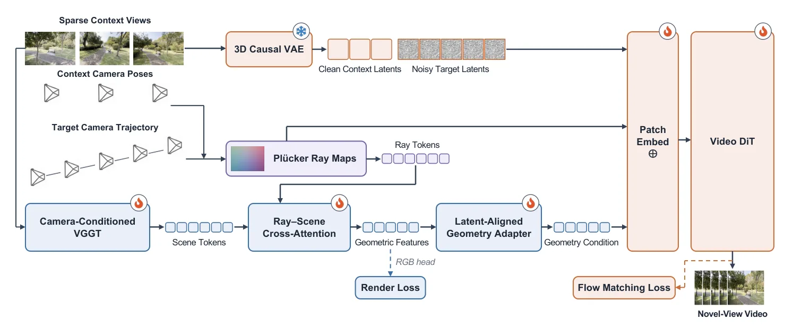
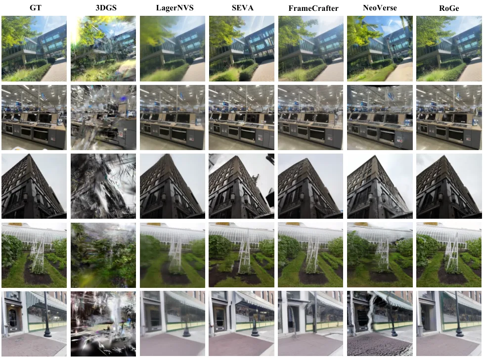
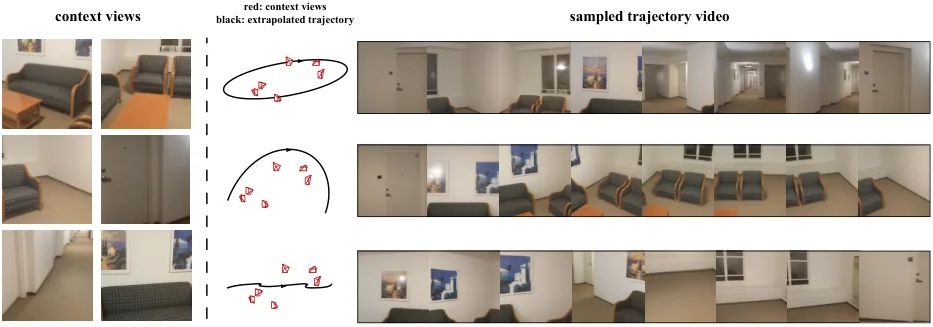

RoGe：端到端隐式重建与生成的新视角合成
RoGe: Novel View Synthesis via End-to-End Implicit Reconstruction and Generation
把稀疏视图的几何锚定与未观测区域生成放进同一个可联合训练的条件链，重点改善相机跟随、跨视角一致性和空洞补全。
作者、单位与技术谱系 · Research context
作者与单位
研究脉络
- VGGT/CUT3R 与前馈几何重建方法基座关系：继承多视图前馈几何和相机条件化表征[论文方法与相关工作]
- 3DGS、LagerNVS、SEVA 等重建/生成路线方法上游关系：回应显式 3D 桥接、重建空洞与生成漂移的折衷[官方 HTML 表 1–2]
- RoGe 射线查询联合训练本篇推进关系：取消显式 3D 中间并让生成目标反向塑造几何条件[论文方法与消融]
作者、方法谱系和网络关系均以官方 HTML 的署名、引用和项目链接为依据；未发现公开合作边时不作导师或实验室关系推断。
方法本质拆解 · What actually changed
训练
RoGe 同时训练 camera-conditioned VGGT 式重建网络、ray map encoder 和 video diffusion 模块，而不是只在测试时优化一个场景。官方 HTML 报告训练 312,500 steps、16 张 H20、batch size 1，并使用 0.1 的渲染损失权重。
约束
输入约束包括已标定图像、相机内参、源位姿和目标相机射线，射线的方向与原点形成 Plücker 条件。目标函数把 flow-matching 生成损失与渲染损失相加，使生成质量对几何条件产生训练信号。
推理
推理时先从稀疏输入得到隐式重建特征，再按目标相机轨迹查询每视图的 ray-queried geometry，随后条件化视频扩散输出时序帧。它没有在推理阶段运行传统全局 bundle adjustment，也没有显式构造 3D Gaussian 中间场景。
机制
RoGe 改变的是几何信息进入生成器的位置：从有损的渲染/显式 3D 桥接改为沿目标射线直接查询的隐式特征。联合训练让生成目标反向塑造几何条件，从而同时缓解重建空洞和生成几何漂移，但不能消除未观测内容的本质不确定性。
输入稀疏已标定图像与目标射线，直接查询隐式几何特征并条件化视频扩散，再用联合渲染目标塑造几何表征。

动机与问题Motivation
动机与问题
稀疏输入的新视角合成同时面对观测区域的几何约束和未观测区域的内容补全，单独重建会出现空洞，单独生成又可能相机跟随不稳。研究问题是如何让生成模型沿指定轨迹保持时序一致，同时让重建表征获得生成目标的反向信号。
方法Method
方法总览
RoGe 先用 camera-conditioned VGGT reconstruction network 从输入图像、内参和位姿得到隐式场景表征，再对目标相机射线查询每视图几何特征。几何特征经过编码后注入 video diffusion，重建模块和生成模块以联合目标共同训练。
关键技术细节
目标射线被表示为包含方向与原点的 Plücker 特征，ray map encoder 将重建特征变成可注入视频模型的条件。训练损失为 L_FM 加 0.1 倍的渲染损失；视频 latent 还使用上下文帧和目标帧的时间打包，而不是先渲染一个独立 3D 场景再生成。

实验Experiments
实验设置
作者在 ARKitScenes、BlendedMVS、DL3DV、MVS-Synth 和 WildRGB-D 上训练，输入重建分辨率为 288×504，视频生成分辨率为 192×336。训练使用 312,500 steps、16 张 H20、batch size 1；测试使用 DL3DV 由 SEVA 选出的 10 条序列，指标含 PSNR、SSIM、LPIPS、DreamSim、TSED、MEt3R、FID、FVD、TransAPE 和 RotAPE，对照包括 3DGS、YoNoSplat、LagerNVS、SEVA、FrameCrafter、GEN3C 与 NeoVerse。
实验数字与比较
DL3DV 图像指标中，RoGe 达到 PSNR 20.92、SSIM 0.642、LPIPS 0.124、DreamSim 0.087；LagerNVS 为 20.90、0.639、0.193、0.122，因此 RoGe 在前三项更优但 DreamSim 略高。视频/几何指标中 RoGe 的 FVD 为 58、TSED 为 0.9977，LagerNVS 的 FVD 为 206、TSED 为 0.9872；数字来自官方 HTML 表 1–2。
消融/失败边界
几何条件从 None 到 rendered RGB、ray-queried geometric features 时，PSNR/SSIM/LPIPS 分别从 19.01/0.535/0.150 变为 20.35/0.609/0.130 和 20.59/0.626/0.127；加入 joint train 后为 20.92/0.642/0.124。作者分析还指出大视角变化会使 LagerNVS 模糊，而 generation-only 方法可能出现相机跟随不稳定和几何变形，说明 RoGe 仍受输入几何与轨迹分布约束。
局限与迁移Limitations & Transfer
局限与待核验
作者明确的实验边界是稀疏已标定图像、指定轨迹和 DL3DV 测试协议，官方 HTML 未报告在线吞吐、长轨迹故障恢复或跨数据集部署。待核验项包括不可靠 VGGT 几何、内参误差、极大视角外推和视频扩散 hallucination 对状态估计的影响。
与你研究路线的关系
可迁移模块是把射线方向、相机轨迹和隐式几何特征作为观测条件，避免过早压缩成单张渲染图；这可作为几何基础模型接入可靠状态估计的前端接口。下一步可将 ray-feature 置信度与 pose residual 接入局部因子图，比较无优化、局部 BA 和生成反馈三种策略在遮挡与相机扰动下的恢复率。
{kind=link}
